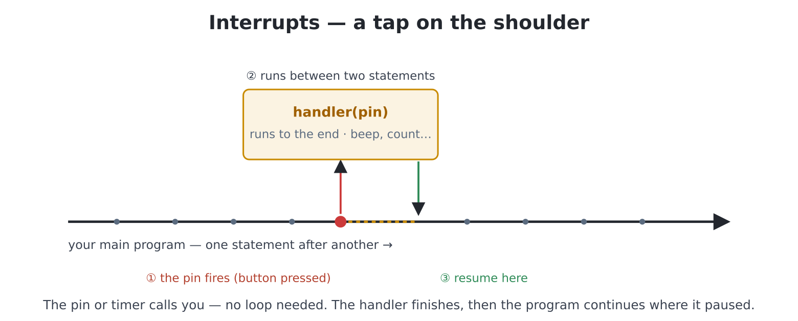
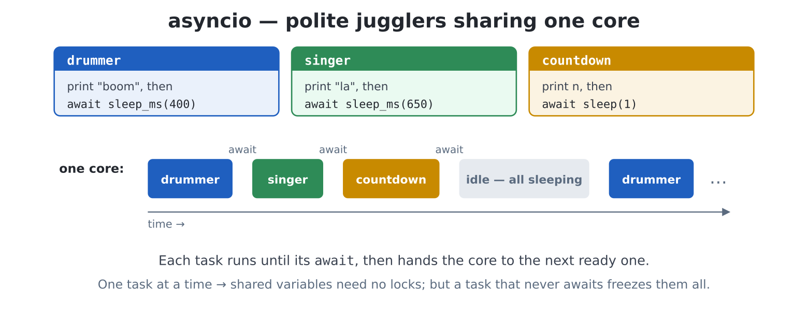

Welcome to Part VI: under the hood. Every program so far has been one
loop doing one thing at a time — and yet keys registered during your
games, hot-swapped SD cards announced themselves, and
play() kept singing while you typed. The machine has been
doing several things at once all along; this chapter hands you the
machinery. There are two kinds, philosophically different:
asyncio — juggling politely. Many
tasks on one core, each running until it volunteers to pause.And one honest limit before anything else: Python here owns exactly one processor core (the other paints the screen, full time — you have known this since chapter 1). Nothing in this chapter makes two pieces of Python compute simultaneously; everything makes turn-taking so fine-grained it feels simultaneous — which, for the record, is most of what your phone is doing too.
MicroPython’s callback model is MMBasic’s software-interrupt model, piece for piece — the translation table:
| MMBasic | Here |
|---|---|
SETTICK period, sub |
machine.Timer(period=..., callback=f) |
SETTICK 0 |
timer.deinit() |
SETPIN n, INTL/INTH/INTB, sub |
Pin(n).irq(f, Pin.IRQ_FALLING / IRQ_RISING / both) |
ON KEY sub |
keyboard.on_key(f) |
WATCHDOG timeout |
machine.WDT(timeout=ms) + .feed() |
| COM interrupt | machine.UART.irq(f, UART.IRQ_RXIDLE) |
Handlers are ordinary functions, called with the object that fired
(the timer, the pin) — and they run between statements
of the main program, including during time.sleep() and even
at the idle prompt. Try that last part, because it rearranges the mind.
At the >>>:
>>> from machine import Timer
>>> t = Timer(period=2000, callback=lambda t: beep(660, 30))The machine now chirps every two seconds while you carry on using
the prompt — type, run things, edit; the heartbeat persists,
because a timer callback needs no loop of yours to live in. (And
t.deinit() when the novelty fades — the board runs about
sixteen timers at once, against MMBasic’s four.) This is also chapter
21’s on_key demystified: same mechanism,
keyboard-shaped.
Chapter 32 polled its button sixty times a second. The interrupt way inverts it: the pin calls you.

Wire the chapter 32 button (GP1 to GND) and
edit("doorbell.py"):
import time
import keyboard
def held(code):
for i in range(1, keydown(0) + 1):
if keydown(i) == code:
return True
return False
# the flag the handler is allowed to touch
presses = [0]
def ring(pin):
# note it and LEAVE -- no real work here
presses[0] += 1
button = Pin(1, Pin.IN, Pin.PULL_UP)
# call ring() on each high -> low edge
button.irq(ring, Pin.IRQ_FALLING)
print("busy doing something else entirely...")
announced = 0
try:
while not held(keyboard.ESC):
# deep in important work, clearly
time.sleep_ms(200)
if presses[0] != announced:
announced = presses[0]
print(f"doorbell rang! ({announced} so far)")
beep(880, 40)
finally:
# always disconnect your handlers
button.irq(None)The main loop sleeps 200 ms at a stretch, yet no press is ever missed
— the edge fires ring() mid-sleep. Study the shape, because
it is the shape: the handler sets a flag; the main loop
does the work. ring() doesn’t print, beep, or draw
— it increments a counter and leaves. That division isn’t style, it’s
law, and the rules section below says why. (The finally
disconnecting the handler is the collar again — a handler left ringing
after its program dies is a haunting.)
For microsecond-critical edges, irq(..., hard=True) runs
your handler in the true hardware interrupt — with strict rules (no
memory allocation inside) that the MicroPython docs spell out; the
scheduled default is right for everything in this book.
Chapter 29’s hardware alarm, completed. The chip decides
when; the pin taps the shoulder; the program does nothing at
all in between — edit("wake.py"):
import time
import ds3231
# alarm: one minute from now (for the demo's sake)
h, m = gettime()[3:5]
m += 1
if m == 60:
m, h = 0, (h + 1) % 24
ds3231.set_alarm(h, m)
print(f"alarm set for {h:02}:{m:02} -- doing nothing "
f"whatsoever...")
rang = [False]
def wake(pin):
rang[0] = True
pin = ds3231.alarm_pin()
pin.irq(wake, Pin.IRQ_FALLING) # the chip pulls the line low
try:
while not rang[0]:
# could be days; costs nothing
time.sleep_ms(500)
print("WAKE UP")
for _ in range(3):
tone(880, 880, 150, wait=True)
tone(1318, 1318, 250, wait=True)
finally:
pin.irq(None)
ds3231.clear_alarm()
ds3231.alarm_off()Flag-and-loop again — and notice what is asleep: everything.
No polling of gettime(), no comparing minutes; the
battery-backed chip holds the appointment and the falling edge delivers
it. This is the architecture of every device that waits well.
The photo frame in the hallway, the plant sentinel on the sill — what
happens when, one Tuesday, a bug freezes them? machine.WDT
is the deadman’s handle: start it, and feed it forever, or the
machine reboots:
import time
import machine
print("I must be fed every 5 seconds. Hold SPACE to feed me.")
wdt = machine.WDT(timeout=5000)
while True:
if keydown(1) == ord(" "):
wdt.feed()
print("fed.")
time.sleep_ms(500)Fair warning before you run it: this one reboots the machine
on purpose — that is the demonstration. Hold SPACE and all is
well; let go for five seconds and you’re watching the boot banner (files
untouched, as ever). Two facts define its character: once started, a
watchdog cannot be stopped — even Ctrl-C to the prompt only
delays the reboot by one unfed timeout — and that irrevocability is
exactly the point: no bug, no hang, no crashed handler can disarm it.
Production appliances feed it once per healthy main-loop pass;
/main.py gadgets destined for hallways deserve one.
(The last shoulder-tap, for completeness:
machine.UART.irq fires when serial data arrives on header
pins — u.irq(handler, UART.IRQ_RXIDLE) — the same
flag-and-loop shape when you get there.)
Four rules, each with its because:
micropython.schedule() queue, which the firmware sizes at
8; the standard MicroPython default is 4). A storm of events past that
is silently discarded. This is why games poll —
keydown(), mouse("X") read live state and
can’t lose events they never queued. (Chapter 21’s philosophy table, now
with its engineering justification.)try/except inside any handler that does something
risky.asyncio: the polite
jugglersA different deal entirely: no interruptions — instead, many
tasks, each running until it volunteers a
pause with await. Three jugglers;
edit("juggler.py"):
import asyncio
async def drummer():
while True:
print("boom")
await asyncio.sleep_ms(400)
async def singer():
while True:
print(" la")
await asyncio.sleep_ms(650)
async def countdown():
for n in range(10, 0, -1):
print(f" {n}")
await asyncio.sleep(1)
print(" LIFT OFF")
async def main():
asyncio.create_task(drummer())
asyncio.create_task(singer())
await countdown() # main() ends when this ends
asyncio.run(main())Three rhythms interleave on one core. The grammar:
async def marks a function as a task
recipe; await asyncio.sleep_ms(...) is the
volunteering (“wake me in 400 ms — someone else can have the core”);
create_task starts a recipe running alongside;
asyncio.run(main()) starts the whole circus and ends when
main() returns (taking the background tasks with it).

Two properties make asyncio kind to programmers. Because
only one task ever runs at an instant, tasks share variables
freely — no locks, no races; the juggler’s baton passes only at
awaits. And the cost of that kindness names itself:
a task that blocks, blocks everyone —
time.sleep() (the non-async one), a heavy computation, a
slow file read stall the whole circus. The discipline is one sentence:
inside async code, every pause is an await.
The pattern behind every connected gadget with a live display —
chapter 17’s bouncing ball, animating while chapter 30’s
weather arrives. edit("skywatch.py"):
import asyncio
import time
import keyboard
import requests
def held(code):
for i in range(1, keydown(0) + 1):
if keydown(i) == code:
return True
return False
URL = ("https://api.open-meteo.com/v1/forecast?latitude=51.5"
"&longitude=-0.13¤t_weather=true")
screen(hdmi.RGB640)
time.sleep(3)
W = hdmi.width()
H = hdmi.height()
hdmi.close("F")
hdmi.create()
hdmi.write("F")
d = hdmi.fb()
BG = d.colour(0x080814)
INK = d.colour(GOLD)
DIM = d.colour(GRAY)
# shared freely: asyncio's gift
report = ["fetching..."]
async def fetcher():
while True:
try:
# blocking! see the prose
r = requests.get(URL)
try:
if r.status_code == 200:
wx = r.json()["current_weather"]
report[0] = (f"{wx['temperature']:.0f} "
f"C outside")
else:
report[0] = "sky unavailable"
finally:
r.close()
except (OSError, ValueError, KeyError):
report[0] = "offline"
await asyncio.sleep(60)
async def bouncer():
x, y = 100.0, 100.0
dx, dy = 220.0, 150.0
last = time.ticks_ms()
while True:
now = time.ticks_ms()
dt = time.ticks_diff(now, last) / 1000
last = now
x += dx * dt
y += dy * dt
if x < 12 or x > W - 12:
x = max(12, min(W - 12, x))
dx = -dx
if y < 12 or y > H - 12:
y = max(12, min(H - 12, y))
dy = -dy
d.fill(BG)
d.ellipse(int(x), int(y), 10, 10, INK, True)
hdmi.text(report[0], 16, 12, DIM)
hdmi.vsync()
hdmi.copy("F", "N")
await asyncio.sleep_ms(5) # the volunteer's pause
async def main():
asyncio.create_task(fetcher())
b = asyncio.create_task(bouncer())
while not held(keyboard.ESC):
await asyncio.sleep_ms(50)
b.cancel()
console("none")
try:
wifi()
except Exception:
pass
try:
asyncio.run(main())
finally:
hdmi.write("N")
console()The ball bounces; once a minute the corner caption updates itself;
nobody’s loop contains anybody else’s business. Now the honest
engineering, because this program contains a deliberate imperfection:
requests.get blocks — for the second or so
a fetch takes, every task stalls, ball included. Watch for it
at the minute mark. Two things make it livable, and both are old
friends: the fetch is rare (a stall a minute is a blink; this
is why the chapter 30 panel fetched every ten), and the ball’s motion is
dt-based — chapter 22’s per-second
discipline means the ball reappears where it would have been, a
skip rather than a slow-motion smear. For the day you need truly
non-blocking networking, asyncio’s stream API exists (the
manual’s docs link) — but know that most shipped gadgets do exactly what
this one does, and choose their fetch moments kindly.
MicroPython elsewhere offers _thread; this board
deliberately does not. An rp2 thread runs on the second core,
and the second core here has a full-time job you would not want
interrupted — chapter 17 taught you exactly how relentless the scanout
is. Nor would threads buy what people hope: all Python shares one core
regardless, so a heavy computation pauses the world under any
of these schemes. asyncio for structure, callbacks for
shoulder-taps, and — for genuinely parallel heavy lifting — the honest
answer on this machine is C modules, which is Part VI’s final chapter’s
territory to point at, not to teach.
deinit just the first. Polyrhythm from the idle REPL;
the mechanism could not care less that no program is running.beep into the handler and
hammer the button. Feel rule 1 (the main loop stutters) — then break
rule 3: make the handler divide by zero on the fifth press and watch the
doorbell die silently. Resurrect it with try/except
inside.input() — the
ultimate blocking call — and watch the whole circus freeze until Enter.
(This is why asyncio programs use the keyboard via polling or
on_key, never input().)skywatch, drop the fetch interval to 5 s and the URL
to something far away, and measure the stall:
ticks_diff around the requests.get, worst case
on screen. Engineering is knowing your numbers.deadman.py, then Ctrl-C to the prompt and try to out-type
the reboot. Five seconds focuses the mind — and teaches precisely why
production code feeds the dog in the main loop, not in a timer
callback (what would a hung main loop plus a healthy timer mean for the
reboot you wanted?).skywatch’s fetcher with
asyncio.open_connection and a hand-rolled HTTP GET (the
docs link has the recipe) — then measure: did the minute-mark skip
vanish? (This is real systems work; budget an evening and expect to
learn why requests is popular.)bus.py:
on(name, fn) and emit(name, **info) — a dict
of lists of functions (chapters 10 + 11). Wire the doorbell, a timer and
a key handler to emit; one asyncio task drains a queue and dispatches.
You will have built the pattern inside every GUI toolkit, including
chapter 27’s./main.py gadget
of your choice made unkillable: watchdog fed on health checks
(not blindly!), all handlers try-wrapped, every network
touch chapter 30 hardened, and a boot counter file that increments on
every start — so the number on screen tells you honestly how often it
has died. Ship it; check the counter in a month; iterate. That number
reaching single digits per year is the whole discipline of Part VI in
one integer.